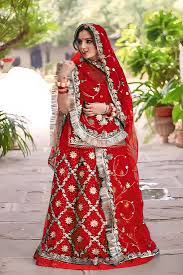
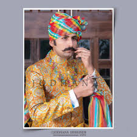
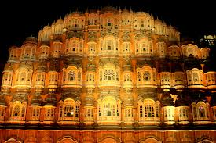
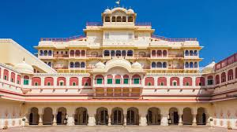

📍 About Rajasthan
Rajasthan is known as the Land of Kings. It is famous for historical forts, royal palaces, desert landscapes, folk music, and vibrant culture.
🍛 Famous Food
Dal Baati Churma, Gatte ki Sabzi, Laal Maas

👗 Traditional Dress
Ghagra Choli & Pagdi with Angrakha


🏰 Famous Places
- Hawa Mahal
- Jaisalmer Fort
- City Palace Jaipur


⭐ Special Fact
Rajasthan is home to the world's oldest mountain range — The Aravalli Range.